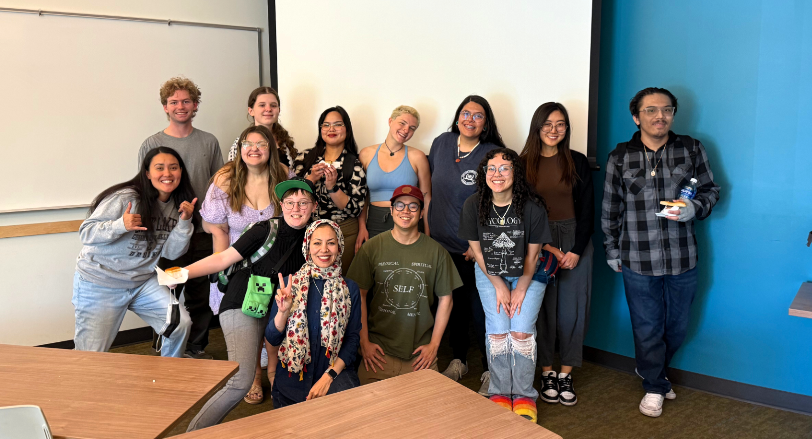

Humanities (HU) – Honors 2100
Intellectual Traditions: The Experience of Being
Human Experience Through Storytelling — aka the class that made me realize oral history is just ancestral chisme with citations. This page reflects my final project for Honors 2100, a course that asked what it means to be human by examining the stories we tell, how we tell them, and how they shape our identity, culture, and survival.
Signature Project: Becoming Selena
Selena wasn’t just a singer — she was the blueprint. A baddie before the word had hashtags. This project, “Becoming Selena”, reimagines her legacy as an anatomy chart because every part of her — the brain, the voice, the heart, the hands — tells a story of cultural defiance, dual identity, and beauty that broke barriers. She didn’t just perform; she stitched herself into culture. Through this visual piece, I turned her silhouette into a storytelling map of survival, joy, and generational impact. Period.

Project Explanation Sheet (PDF)
This sheet breaks down the symbolism behind the body parts, metaphors, and how I tied her legacy to this class’s core themes like identity, storytelling, and survival across cultures.
Reflection
Selena Quintanilla represents the four essential elements of this class which cover identity storytelling resistance and memory. Her existence served as more than pure fame because she brought significance to her work. She maintained a fluid connection between two diverse cultures and linguistic worlds which she presented effortlessly to everyone. Through the conflicts she experienced she found strength because she learned to use her dual heritage as power. The double nature of her Mexican and American identities along with English and Spanish and strong and feminine aspects captured my attention because it mirrors how I feel about myself.
I selected the digital anatomy-style poster design to interpret Frida Kahlo's story by transforming it into meaningful symbolic and emotional content instead of standard visual material. I obtained the concept from our human experience analysis during this class. Since the course analyzed human nature through breakdowns I decided to literally break down her achievements through body parts. Her brain united two conscious sights within herself. Her hands became her craft. Through her heart she communicated her emotions. Through her voice she left an enduring mark which spread from one generation to the next. These individual elements of the body shared distinct narratives which merged into a unified force that transcended historical information or dates to become an enduring presence.
Through the creation process I discovered that recounting someone’s life story requires more than simply recounting their accomplishments. It’s about why it mattered. The significant reality lies in the emotional forces that underpin factual structures. Thinking thoroughly became essential to transfer her core message rather than just recite her life achievements. Poetic verbalization combined with repeated vital components alongside emotional delivery from each visual element became the foundation to create this work. To achieve effective storytelling I had to abandon academic detachment in favor of focusing on creating stronger personal and cultural bonds.
The narrative of Selena directly reflects many concepts we studied during the semester. Throughout our classroom discussions we studied cultural hybridity with and symbolic borders and oral storytelling representation as well as who chooses to be remembered. The whole existence of Selena served as a living demonstration of those elements. She transcended dual cultural identities to create something wholly new between them. Something new. The new creation appeared without waiting for anyone's approval to live. All truthful narratives hold immense power no matter how chaotic they may seem.
Creating something that seemed animate was the main goal I pursued with this work. Not polished, not perfect — but real. I initially attempted making a timeline or collage yet the end result seemed flat. The story I wanted to share focused more on Selena's cultural influence than on her life events after realizing that through class readings discussions I had uncovered the true meaning of her story. The body metaphor clicked into place at this moment so I finally poured genuine emotion and unleashed restraint in my captions.
What still needs work? The current design disorder makes the text look messy. The reflection requires additional formalization. Making it totally clean would create something that was not me but I needed to maintain my own expression. The finished piece would not capture the essence of Selena. So I left some repetition in. I let some lines echo. Authentic stories sometimes stay untangled rather than concluding neatly through one single explanation. Sometimes it loops back.
The class served to connect with parts of my education along with my life experiences. Through our studies in Latin American Studies I learned how Selena performed beyond musical skills since she exhibited a complete cultural synthesis named mestizaje. The study of Criminal Justice at school brought me to thoughts about visibility and justice while Selena's story showed me how cultural representation operates as justice. My Nursing studies about human anatomy allowed me to focus on this creative assignment where I investigated its metaphorical aspects. A body of meaning. A body of memory.
This was more than a project. It was a translation. A reflection. A thank-you. Through her existence Selena transformed the standards of living for all who share a similar background.
HON2100 – Spring 2025
This class wasn’t just a class about storytelling — it was the damn plot. These people didn’t just show up, they showed out. They challenged my thinking, held space for chaos and contradiction, and helped me sharpen the exact voice spilling all over this page. This is the crew that held me down through it all — breakdowns, breakthroughs, and an unholy amount of screen time.
Me on the far right, dehydrated, still ate, both academically and literally.